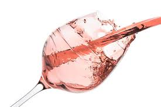

Roseen perinteisessä valmistusmenetelmässä rypäleiden kuoret saavat olla melko lyhyen ajan käyvässä mehussa, jolloin viiniin liukenee vain osa kuorien väristä. Kuoret kaadetaan sen jälkeen pois. Puristusajankohtaa säätelemällä viinistä saadaan enemmän tai vähemmän värillistä. Euroopan Unionin alueella tuotetut roseet on valmistettu tällä menetelmällä.Toinen valmistustapa on saignée-tekniikka, jossa vaaleampi mehu valutetaan punaviinin käymisastioista ja siitä tehdään sitten roseeta. Tätä tapaa käytetään yhä White Zinfandel -viinin tuotannossa Kaliforniassa (missä siitä käytetään joskus nimitystä blush), mutta Euroopassa se on pitkälti korvattu pneumaattisella puristustekniikalla.Kolmas tapa valmistaa roseen nimellä myytävää viiniä on sekoittamalla puna- ja valkoviiniä. Tätä tapaa pidetään yleisesti tavoista huonoimpana, mutta sitä saa käyttää Yhdysvalloissa ja Australiassa. EU-komissio yritti vuonna 2009 sallia kyseisellä menetelmällä tuotettujen viinien kutsumisen roseeksi myös Euroopassa, mutta lakiesitys peruttiin Ranskan viinintuottajien vastustuksesta
Roseeviini (myös rosee, roséviini tai rosé) on punaviinirypäleistä tehtävä vaaleanpunainen viini.Rosee on kevyt, raikas ja marjainen viini, joka on parhaimmillaan nuorena ja tuoreena. Se sopii usein sellaisten ruokien kanssa, joille punaviini on liian voimakasta mutta valkoviinikään ei sovi. Roseeta käytetään usein myös seurustelujuomana, ja se on erityisen suosittu kesäviininä. Rosee nautitaan yleensä viileänä. Roseen suosio ja arvostus puna- ja valkoviineihin nähden on kasvanut viime vuosikymmeninä huomattavasti. Roseen suurimmat tuottajamaat Euroopassa ovat Ranska, Espanja (etenkin Katalonia), Portugali ja Saksa. Espanjassa roseeta kutsutaan nimellä rosado. Tumminta roseeta saadaan lämpimiltä tuotantoalueilta, missä rypäleiden väripigmentti on tummempaa kuin viileämmillä alueilla.
